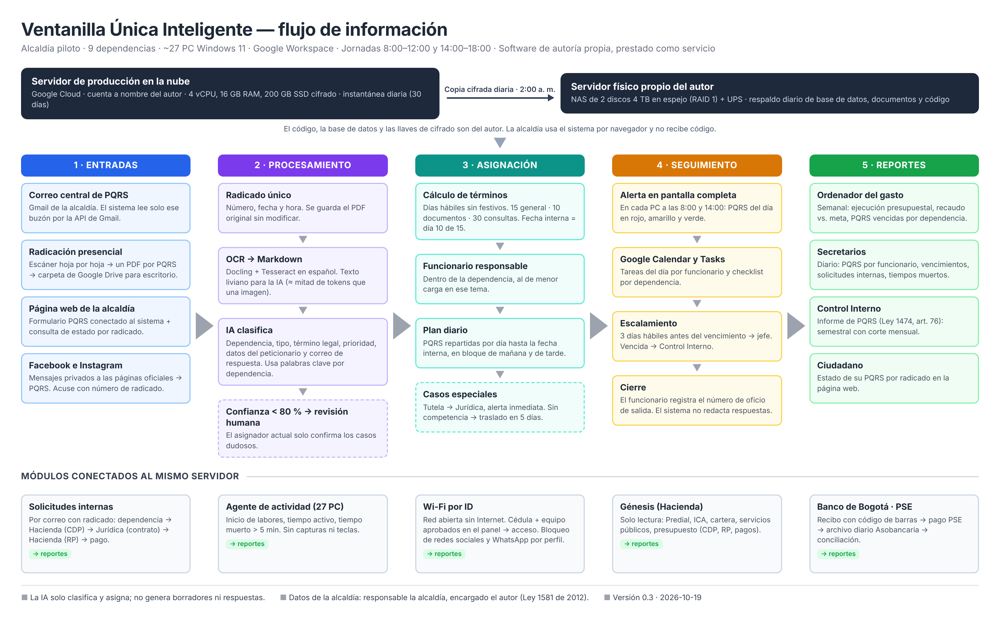

Sistema que recibe todas las PQRS de la alcaldía por cualquier canal, las convierte a texto, las clasifica con IA, las asigna a la dependencia y al funcionario, calcula la fecha límite legal y avisa en la pantalla de cada computador al inicio de cada jornada. En el mismo servidor se conectan: solicitudes internas entre dependencias, control de actividad de los computadores, Wi-Fi institucional por identificación, el software financiero Génesis y el recaudo por PSE con el Banco de Bogotá.
La IA solo clasifica y asigna. No redacta borradores ni respuestas.
La imagen del flujo completo está en la página siguiente.

Figura 1. Flujo de información. Archivo: flujo_ventanilla_unica.png.
Por qué es mejor que venderlo como desarrollo:
El autor es hoy contratista de la alcaldía, con obligaciones que no incluyen crear herramientas. Por eso el software no queda cubierto por la presunción del art. 20. Para que quede claro:
| Elemento | Situación |
|---|---|
| Dependencias | 9 |
| Computadores | ~3 por dependencia → ~27 PC con Windows 11 |
| Correo y calendario | Google Workspace. Cada dependencia tiene su correo; hay un correo central que recibe todas las PQRS |
| Ventanilla única | Página web: un funcionario escanea, sube y asigna la dependencia a mano. La dependencia recibe un correo con el PDF adjunto, sin enlace ni correo de respuesta del ciudadano |
| Entradas de PQRS | Correo central y radicación presencial |
| Escáner | Común, hoja por hoja |
| Software financiero | Génesis (Hacienda: todos los recursos). La información está en la nube del proveedor |
| Servicios públicos | Dependencia de la alcaldía |
| Proveedor de Internet | Colombia Más |
| Página web y redes sociales | Las administra la misma persona |
| Recaudo | Banco de Bogotá, PSE |
| Jornadas | 8:00–12:00 y 14:00–18:00 |
| Control Interno | No hace hoy el seguimiento a PQRS |
| Solicitudes de contratación y recursos | Se hacen en persona, sin trazabilidad |
| Accesos del autor | Ventanilla (uso completo), Génesis (consulta completa), funcionarios que usan la ventanilla, funcionario clave de cada dependencia, posible acceso al administrador de Google Workspace |
Por qué no solo un servidor físico propio para producción: depende de la luz, del Internet y de la IP del lugar donde esté. Si se cae, las alertas y la radicación se detienen, y las PQRS tienen términos legales. La nube da la disponibilidad; el NAS da la posesión física de una copia completa.
El servidor físico no protege el código por sí mismo. Lo que protege la autoría es el registro en la DNDA, no entregar el código y el contrato de licencia (sección 15).
| Componente | Especificación |
|---|---|
| Proveedor | Google Cloud, Compute Engine (mismo proveedor que Google Workspace) |
| Máquina | e2-standard-4: 4 vCPU, 16 GB RAM |
| Disco | 200 GB SSD, cifrado con llave del autor (Cloud KMS) |
| Sistema operativo | Ubuntu Server 24.04 LTS |
| Respaldo en la nube | Instantánea diaria del disco, retención 30 días |
| Componente | Especificación |
|---|---|
| Tipo | NAS de 2 bahías (ej. Synology DS224+) |
| Discos | 2 × 4 TB en espejo (RAID 1): si un disco falla, el otro tiene todo |
| Energía | UPS de al menos 30 minutos |
| Respaldo diario | 2:00 a. m.: copia cifrada de la base de datos, los PDF, los Markdown y el código. Retención: 30 diarias, 12 mensuales |
| Código | Copia espejo diaria del repositorio privado de GitHub |
| Prueba | Restauración de prueba una vez al mes |
Resultado: 3 copias de los datos (producción, instantánea en la nube, NAS) en 2 lugares distintos.
| Capa | Herramienta | Uso |
|---|---|---|
| Contenedores | Docker Compose | Despliegue de todos los servicios |
| Base de datos | PostgreSQL 16 | Base única del proyecto |
| Archivos | MinIO | PDF originales y Markdown |
| Orquestación | n8n (instalado en el servidor) | Lectura de Gmail y Drive, redes sociales, Calendar, tareas programadas |
| Backend | Python + FastAPI | Reglas de negocio: términos, asignación, reportes, Wi-Fi |
| OCR | Docling + Tesseract (español) | PDF escaneado → Markdown |
| IA | API de Claude (claude-opus-5-5 por defecto, configurable) | Solo clasificación; si falla, clasificador por palabras clave |
| Panel web | React | Asignador, funcionarios, secretarios, ordenador del gasto, administración del Wi-Fi |
| Agente de PC | Python compilado (.exe), Windows 11 | Alertas y actividad |
| Red (en la alcaldía) | OPNsense + AdGuard Home | Wi-Fi por ID y bloqueo de páginas |
Regla: la lógica de negocio vive en el backend. n8n solo mueve información entre sistemas.
| Canal | Cómo entra al sistema |
|---|---|
| Correo central de PQRS | API de Gmail. El sistema lee solo ese buzón, no los correos de cada dependencia. Cada correo nuevo y sus adjuntos se radican. |
| Radicación presencial | El radicador escanea la PQRS completa como un solo PDF y lo guarda en una carpeta sincronizada con Google Drive para escritorio. El sistema lee esa carpeta cada minuto. |
| Página web de la alcaldía | Formulario de PQRS que envía directo al sistema (nombre, documento, correo, dirección, asunto, adjuntos). Al enviarlo, el ciudadano recibe su número de radicado. En la misma página: consulta del estado por número de radicado. |
| Facebook e Instagram | Los mensajes privados a las páginas oficiales llegan por la API de Meta. Si el mensaje es una PQRS, se radica y se envía al ciudadano un acuse con el número de radicado. Los comentarios públicos no se radican solos; quien maneja las redes puede marcar uno como PQRS desde el panel. |
| WhatsApp (fase posterior) | WhatsApp Business Platform, mismo tratamiento que Facebook. Tiene costo por conversación. |
El acuse de radicado es un mensaje fijo ("Su PQRS fue radicada con el número X"). No es una respuesta.
La ventanilla actual no se modifica. Durante el piloto sigue funcionando igual, en paralelo.
{
"tipo": "peticion_general | documentos | consulta | queja | reclamo | denuncia | tutela",
"dependencia": "Secretaría de Hacienda",
"termino_dias_habiles": 15,
"prioritario": false,
"asunto": "Paz y salvo predial predio 01-00-0123",
"competencia_alcaldia": true,
"peticionario": {"nombre": "", "documento": "", "correo_respuesta": "", "direccion": ""},
"confianza": 0.93
}
Las 9 dependencias de la alcaldía piloto. Las palabras se ajustan con el funcionario clave de cada una.
| Dependencia | Palabras clave |
|---|---|
| Despacho del Alcalde | audiencia con el alcalde, plan de desarrollo, rendición de cuentas; tutelas, demandas y traslados por competencia (por confirmar) |
| Gobierno | espacio público, ruido, convivencia, establecimiento de comercio, inspección de policía, comisaría de familia |
| Hacienda | predial, industria y comercio, ICA, paz y salvo, avalúo, prescripción, acuerdo de pago, cobro coactivo |
| Planeación | licencia de construcción, uso del suelo, nomenclatura, POT, estratificación, SISBEN |
| Infraestructura | vías, huecos, pavimentación, puente, alumbrado público, placa huella, obra, maquinaria |
| Contratación | contrato, contratista, licitación, SECOP, pliego, supervisión, interventoría |
| Unidad de Servicios Públicos | acueducto, alcantarillado, aseo, factura, medidor, reconexión, fuga |
| Desarrollo | adulto mayor, Colombia Mayor, subsidio, discapacidad, víctimas, primera infancia, campesino, agropecuario |
| Bienes y Servicios | almacén, inventario, comodato, arrendamiento, préstamo de salón o coliseo, parque automotor, mantenimiento |
Concejo Municipal y Personería son entidades independientes de la alcaldía. Se atienden como clientes separados del mismo servicio, con autorización de su propio representante (presidente del Concejo, personero).
| Tipo | Días hábiles |
|---|---|
| Petición general, queja, reclamo | 15 |
| Documentos o información | 10 |
| Consulta | 30 |
| Petición entre autoridades | 10 |
| Prórroga | Avisar antes del vencimiento; máximo el doble del término |
| Elemento | Funcionamiento |
|---|---|
| Alerta de jornada | Pantalla completa en cada PC a las 8:00 y a las 14:00, o en el primer inicio de sesión después de esa hora. Muestra: PQRS del bloque, en rojo (vencen en ≤ 3 días hábiles), amarillo (en curso) y verde (nuevas). Se cierra con el botón "Entendido", que queda registrado. |
| Google Calendar | Un evento por PQRS en el calendario del funcionario, en el bloque asignado. |
| Google Tasks | Checklist diario por funcionario y por dependencia. |
| Escalamiento | 3 días hábiles antes del vencimiento sin cerrar → correo y alerta al jefe de dependencia. Vencida → alerta a Control Interno. |
| Cierre | El funcionario marca la PQRS como respondida y registra el número del oficio de salida y la fecha de envío. |
| Consulta ciudadana | El ciudadano consulta en la página web el estado por radicado: radicada, asignada a [dependencia], respondida. |
Trámites como las licencias de construcción funcionan igual que una PQRS: radicado, responsable, pasos y plazo. Se modelan uno por uno con el funcionario clave de cada dependencia y luego se conectan en un flujo de toda la alcaldía. El primero ya está mapeado: licencias de construcción (Planeación), archivo diagramas/flujo_licencias_construccion.pdf.
Hoy las solicitudes de contratación y recursos se hacen en persona. Con el sistema:
[CDP] Secretaría X - objeto.Programa instalado en los 27 PC con Windows 11. Es el mismo programa que muestra las alertas de jornada.
| Dato | Cómo se obtiene |
|---|---|
| Inicio de labores | Primer inicio de sesión o desbloqueo del día. Antes de eso no se mide nada. |
| Aplicación o página activa | Nombre de la ventana en primer plano, cada 60 segundos |
| Actividad | Momento del último uso de teclado o mouse |
| Tiempo muerto | Más de 5 minutos sin actividad, o más de 5 minutos fuera de las aplicaciones y páginas asignadas a la dependencia y al funcionario |
| Fin de labores | Cierre de sesión, bloqueo o apagado |
No registra teclas, no toma capturas de pantalla, no lee documentos ni correos. Solo metadatos.
Reportes: diario por funcionario (hora de inicio, tiempo activo, tiempo muerto, % en aplicaciones asignadas) y semanal por dependencia (promedios y comparación).
Antes de instalarlo: resolución firmada por el alcalde que adopta la medida y su finalidad; política de tratamiento de datos y aviso a cada funcionario (Ley 1581 de 2012); socialización con los funcionarios. El reporte es insumo de evaluación, no sanción automática.
| Perfil | Bloqueado |
|---|---|
| Estándar | Facebook, Instagram, TikTok, X, WhatsApp (app y web), YouTube, plataformas de video, juegos, apuestas |
| Comunicaciones | Igual al estándar, pero permite las redes sociales para manejar las cuentas oficiales |
| Hacienda / Tesorería | Estándar + solo conexión por cable para los PC |
Equipo en la alcaldía: mini PC con 4 puertos de red y 8 GB de RAM. Los puntos de acceso Wi-Fi existentes se configuran con una sola red abierta conectada a ese equipo.
La información de Génesis está en la nube del proveedor, así que la conexión depende de él. Siempre solo de lectura, solicitada por la alcaldía al proveedor y con un usuario propio del sistema (no con las credenciales personales del autor). Por orden de preferencia:
Datos: liquidaciones y pagos de Predial e ICA, cartera morosa, facturación de servicios públicos, ejecución presupuestal (CDP, RP, obligaciones, pagos).
Trámite: la alcaldía solicita al ejecutivo de cuenta del Banco de Bogotá el recaudo en línea con PSE y el envío del archivo diario.
| Destinatario | Contenido | Frecuencia |
|---|---|---|
| Ordenador del gasto | Ejecución presupuestal, recaudo vs. meta (Predial, ICA, servicios públicos), PQRS vencidas por dependencia, solicitudes internas detenidas | Semanal |
| Secretarios | PQRS por funcionario, vencimientos próximos, solicitudes internas pendientes, tiempos muertos del equipo | Diario |
| Control Interno | Informe de PQRS (Ley 1474 de 2011, art. 76): recibidas, respondidas a tiempo, vencidas, por tipo y dependencia | Semestral, con corte mensual |
| Funcionario | Sus tareas del día y su propio reporte de actividad | Diario |
| Ciudadano | Estado de su PQRS | En línea |
Formato: una página, tablas y semáforo, exportable a PDF.
| Medida | Cómo |
|---|---|
| Cifrado en tránsito | HTTPS en todo: navegador, agente de PC, equipo de red |
| Cifrado en reposo | Disco del servidor y copias del NAS cifrados con llaves del autor |
| Acceso al servidor | Solo el autor, con llave SSH y verificación en dos pasos. Solo el puerto HTTPS abierto al público |
| Acceso al sistema | Ingreso con la cuenta de Google de la alcaldía de cada funcionario. Cada uno ve solo su dependencia; los secretarios su secretaría; el ordenador del gasto todo |
| Bitácora | Quién vio, cambió, reasignó o descargó cada documento, con fecha y hora |
| Datos personales | La alcaldía es responsable y el autor es encargado del tratamiento (Ley 1581 de 2012), con acuerdo firmado |
| IA | Solo recibe el texto necesario para clasificar. La API de Claude no usa esos datos para entrenar |
| Fin del servicio | Los datos se entregan a la alcaldía en CSV y PDF en 30 días y luego se borran del servidor |
| Qué | Protección |
|---|---|
| Código, manuales, diagramas | Derecho de autor desde que se crean (Ley 23 de 1982; Decisión Andina 351 de 1993) |
| La idea | No se protege; solo la forma concreta en que se escribió (Decisión 351, art. 7) |
| Software como invento | No es patentable como tal (Decisión Andina 486, art. 15) |
| Nombre del producto | Marca ante la SIC, 10 años renovables |
| Fase | Alcance | Duración | Criterio para pasar |
|---|---|---|---|
| 0. Base | Registro DNDA, servidores, repositorio privado, palabras clave con funcionarios clave | 3 semanas | Software registrado; servidores con respaldo diario probado |
| 1. Piloto PQRS | Entradas (correo central y presencial), OCR, IA, asignación, alertas y Calendar en Hacienda y Planeación, 6 PC | 6 semanas desarrollo + 4 operación | ≥ 90 % de asignaciones correctas; 100 % de PQRS con fecha límite; alertas en los 6 PC |
| 2. Toda la alcaldía | 9 dependencias, 27 PC, página web | 3 semanas | Mismo criterio |
| 3. Redes sociales | Facebook e Instagram | 3 semanas + aprobación de Meta | Mensajes radicados con acuse |
| 4. Actividad | Agente de actividad y reportes | 4 semanas | Resolución firmada; agente en 27 PC |
| 5. Wi-Fi por ID | Equipo de red y panel | 3 semanas | Ningún equipo sin registro con Internet |
| 6. Financiero | Génesis, solicitudes internas, reportes del ordenador del gasto | 6 semanas | Reporte semanal automático |
| 7. Pagos | PSE Banco de Bogotá y conciliación | Depende del banco | Conciliación diaria automática |
En las 2 primeras semanas de operación del piloto el sistema trabaja en paralelo: el asignador sigue con la ventanilla actual y se compara su asignación con la del sistema. Desde la semana 3 el sistema asigna y el asignador solo revisa los casos dudosos.
| Permiso | Quién lo da | Para qué |
|---|---|---|
| Lectura del correo central de PQRS y carpeta de Drive | Administrador de Google Workspace | Entradas |
| Escritura en Calendar y Tasks de los funcionarios | Administrador de Google Workspace | Tareas y checklist |
| Formulario en la página web | Quien administra la página de la alcaldía | Entrada web y consulta de estado |
| Administración de las páginas de Facebook e Instagram | Comunicaciones / prensa | Mensajes como PQRS |
| Usuario de solo lectura en Génesis | Secretaría de Hacienda y proveedor de Génesis | Reportes financieros |
| Recaudo PSE y archivo diario | Tesorería con Banco de Bogotá | Pagos y conciliación |
| Resolución de monitoreo | Alcalde | Agente de actividad |
| Uso de datos reales en el piloto | Alcalde o secretario general, por escrito | Piloto |
| Instalación del equipo de red | Sistemas / secretaría general | Wi-Fi por ID |
Lista completa de preguntas: preguntas.md. Información a reunir: plan-de-inicio.md. Protección del autor: propiedad-intelectual.md.